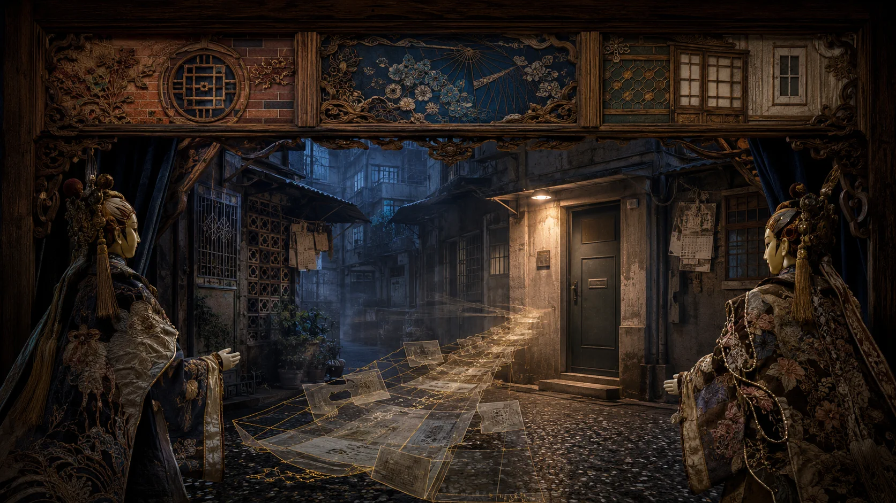

扉、暦、廊下、判決書、法条を映し、子どもや被告を再演させません。

序章 · 紙面の外
住所は一行でも、
到達には誰かが歩き切る道がある
記録には静かな秩序があります。氏名、事件名、日付、番号。しかし大人が指名手配、勾留、薬物の観察・治療、収監などによって元の場所を離れる時、紙面の外の生活も同時に支えを失うことがあります。
子どもは大人の罪名の中には書かれていなくても、その司法上の状態が生む変化を受けます。自分で「ここにいる」と記録へ書き足せません。だから制度は、家に子どもがいるか、誰が世話をしているか、誰かが実際に会ったかを確認しなければなりません。
READING PROTOCOL · EVIDENCE BEFORE EMOTION
誰が何を述べたかを分け、
制度が何を残したかを問う
刑事判決は確定していますが、「確定」は公共的な論争が消えたことを意味しません。刑事責任は確定裁判に従い、判決理由への批判は提起者を明示して、裁判所の認定と混同しません。
各被告の関与、罪名、刑、死因は司法資料に基づきます。
高裁、非常上告、家族・市民の見解に、それぞれ明確な札を付けます。
第54条の1は調査と通報の起点。面会確認と引継ぎの完了はなお検証が必要です。
確定判決の認定歴審裁判検察総長の主張家族／市民の提言立法・機関資料制度上の問い
内容上の注意
児童への暴力、薬物の強制使用、死亡について抑制した文章があります。遺体、傷、識別可能な児童画像、音や人形による被害再現はありません。
WHAT HAPPENED · 判決の前に経過を読む
四つの時点で、王昊が日常から離れた経過と、ひとまとめにしてはいけない行為を確認する
2011年10月11日から11月1日までは21日の隔たりがあり、両端を含めれば22暦日にまたがります。正式な行方不明届や行政上の「失踪児童」認定を意味しません。
人物関係
2歳5か月。常に保護される主体として記します。
事件当時、別件で収監中。引用裁判はこの箇所で時期・罪名を特定していません。
2011年9月から王昊と劉の住居で生活。本件4被告の一人ではありません。
周と共同で連れ去り、反復して傷害。二種類の薬物行為に関与。
劉と共同で連れ去り、反復して傷害。二種類の薬物行為に関与。
10月28日の搬入時は知らなかったと認定。その後メタンフェタミン行為に関与。
後段のヘロイン行為に関与し、最後の注射を含みます。
確定判決｜法制度の沿革
養育環境が変化。父親は別件で収監中
母親は王昊を連れて劉の住居で暮らし始めました。父親は別件で収監され、事実上監督できない状態でした。「2011年9月」は母子が住み始めた時期であり、父親の収監時期や理由を裁判が認定したという意味ではありません。第54条の1はまだ存在せず、当時に遡って適用できません。
確定判決
劉と周が共同で王昊を連れ出す
買物へ行くと装い、劉と周は王昊をまず周の住居へ連れて行き、共同略取罪が認定されました。10月28日に許の住居へ移しますが、裁判は連れ込まれた時点で許は知らなかったと明記します。4人が初日から共同支配したとは書けません。
確定判決
21日の隔たり：劉と周の実力支配下
10/110203040506070809101112131415161718192011/1
王昊は劉・周の実力支配下にあり、許・鄭は10月28日以降の特定行為にそれぞれ関与しました。確定判決は、反復した傷害を劉・周、メタンフェタミン行為を劉・周・許、ヘロイン行為を劉・周・鄭に分けて認定しています。
開く：確定判決が記録した傷（センシティブな内容）
確定判決は、王昊が母親のもとから連れ出された後、頭部・顔面、四肢、体幹に、時期の異なる複数の擦過傷、挫傷、腫れ、痂皮化した傷が残り、指先や爪にも損傷があったと記録しています。その後、ヘロインとメタンフェタミンを強制的に使用されました。これらは凝視するための苦痛の図ではありません。何度も折り畳まれた手紙のように、一つ一つの折り目が、保護が間に合わなかったことを示しています。
法医学資料と裁判所は負傷と死因も区別しました。多発鈍的外傷は直接の致命傷ではなく、確定判決が認定した死因は、ヘロインとメタンフェタミンの相互作用による中毒性ショックでした。文章はここで止まります。この記述は責任を理解するために残すものであり、子どもの痛みを見世物にするためではありません。
確定判決が採用した法医学資料
搬送と死亡
王昊は病院へ搬送されました。採用された法医学資料は、ヘロインとメタンフェタミンの相互作用による中毒性ショックを死因とし、到着前に呼吸・心拍がなかったとします。搬送を手配した事実は故意の争点における一事情ですが、適時の治療でも、確定した刑事責任の消滅でもありません。
CASE & LAW AT A GLANCE
事件と法律を六項目で読む
初期報道の一部は概称で「3歳」としましたが、本ページは裁判資料に従います。
21日の隔たり。両日を含めれば22暦日です。
最高法院は三審上告が法定手続を満たさないとして棄却しました。
劉・周の刑には同一事件で審理された他の薬物・銃器犯罪も含まれます。
2012年7月26日可決、8月8日公布。2013年の判決確定より先です。
非常上告は通常の「第四審」ではなく、その主張は裁判所の認定でもありません。
TWO TRACKS · ONE CHRONOLOGY
司法と立法は並行した。
法改正は判決確定より先だった。
第54条の1は事件後に作られた早期警戒制度です。2011年に既に義務があったと遡って書くことも、当時存在すれば必ず救えたと保証することもできません。
軌道A｜事件と司法
劉と周が共同で王昊を連れ出す。
搬送と死亡。
一審：死刑、無期、14年、13年。
二審で変更。併合後の執行刑は30、20、14、9年。
三審上告を手続上棄却し、二審判決が確定。
非常上告棄却。後の再審請求も認められず。
軌道B｜法と制度
立法院が第54条の1を可決。
第54条の1を公布施行。
司法院が裁判所の調査手順と様式を制定。
刑法第286条を改正。これも一部報道で「王昊条項」と呼ばれました。
虐待刑罰の後続改正は、より広い改革史であり全てを本件の直接成果とはしません。
JUDGMENTS · PROCEDURE MATTERS
一審から確定まで、何が分かれたのか
| 手続 | 日付・事件番号 | 結果 | 読み方 |
|---|---|---|---|
| 一審 | 2012.06.27 台北地院101年度重訴字第1号 | 劉に死刑、周に無期、他2名に14年・13年 | 一部被告について殺人罪を認定。最終結果ではありません。 |
| 二審 | 2013.01.29 台湾高裁101年度矚上重訴字第33号 | 併合後30、20、14、9年 | 傷害致死、薬物強制使用などで評価し、後に確定。 |
| 三審 | 2013.07.10 最高法院102年度台上字第2742号 | 上告棄却 | 上告理由が法定手続を満たさず、全事実を再審理したわけではありません。 |
| 非常上告 | 2013.12.12 最高法院102年度台非字第439号 | 棄却 | 特別救済であり、通常の「第四審」や自動的な事実再審理ではありません。 |
それぞれの法的な声を、それぞれの欄へ
高裁は行為目的、致死量の証明、死亡結果の予見、事後の事情などを総合し、殺人故意の証明は不足すると判断しました。検察総長は非常上告で、薬物の危険を知るとの認定と幼児死亡の予見を否定する判断が矛盾し得ると批判しました。これは検察総長の法的主張であり、別の有罪判決ではありません。
刑期の注意
30、20、14、9年は同一事件で審理した各罪の併合後の執行刑です。特に劉・周には他の薬物・銃器犯罪が含まれ、全てを王昊関連行為だけの刑期とは書けません。謝罪や一礼も、二審変更の単一原因ではありません。
ARTICLE 54-1 · FROM FILE TO DOOR
第54条の1は追悼の言葉ではなく、
調査と通報を始める義務
台湾の《児童及び少年の福祉と権益保障法》（兒童及少年福利與權益保障法）第54条の1は2012年7月26日に可決、8月8日に公布されました。児童の実際の養育者が薬物法規に違反し、指名手配、勾留、観察、勒戒、強制治療、収監という法定状態に入った時、司法警察、検察官、裁判所等は12歳未満の児童の生活・養育状況を調査し、法定リスクを知れば地方主管機関へ通報します。
実際の養育者と法定司法状態を確認。
氏名、年齢、養育関係、所在候補。
担当、日時、方法、結果を記録。
第三者の説明だけでなく児童を実際に見る。
虐待、ネグレクト、養育不足等を法に従い通報。
受理、評価、後続支援まで確認。
三つの誤解を避ける
薬物事件に関係する全児童の自動保護ではありません。正式対象の「児童」は12歳未満です。「王昊条項」は通称であり、2012年の刑法第286条改正にも同じ呼び名が使われたことがあります。
法律が本当に一人の子どもを記憶するなら、
名前だけでなく、次の扉を見つけなければならない。
第一折 · 名前を残す
事件番号になる前に
記録は罪名と日付を残せる。それらが子どもの名を覆ってはならない。
CHAPTER 01 · A CHILD BEFORE A CASE
法が書く前に、彼は一人の子どもだった
王昊、2歳5か月。資料が残すこの事実だけでも、私たちには節度が必要です。好み、会話、心情、遺品を創作せず、傷、事件番号、法条で名前を置き換えません。
公共の記憶は時に子どもを事件名へ縮めます。本章は番号を紙面の奥へ退け、まず、養育を受ける権利があり、自ら制度を呼べなかった幼児を見ます。
彼の名を冠した制度と、制度より先にいた子どもの両方を記憶できるでしょうか。
第二折 · 21の暦枠
見える範囲から離れた日々
暦は死へのカウントダウンではなく、支援が渡らなかった距離を残す。
CHAPTER 02 · OUT OF REACH
子どもはどう支援可能な日常から離れたのか
10月11日以後は劉・周の支配下にあり、許・鄭は10月28日後の特定行為にのみ関与しました。4人を当初から一つの集団として書けば、裁判が分けた時間と行為が消えます。
21枠は死亡の予告でも正式な失踪手続でもありません。自力で帰宅し住所を説明できない幼児の変化に、どの生活関係が気付き、どの制度が動くべきかという問いです。
子どもが日常の軌道から離れた時、誰が気付き、誰が行動可能な人へ知らせるのでしょう。
第三折 · 廊下の終点
搬送は最後の道だった
カメラは廊下の入口で止まり、蘇生も悲嘆も再演しない。
CHAPTER 03 · THE CORRIDOR
到着前に治療は既に間に合わなかった
確定判決が採用した法医学資料は、ヘロインとメタンフェタミンの相互作用による中毒性ショックを死因とし、病院到着前に生命兆候が失われたとします。死因と法的争点に必要な範囲だけを記します。
搬送手配は二審が故意を判断した事情の一つですが、適時の治療ではなく、先行行為の責任を消しません。遅延、予見、新たな法医学意見への主張は出典を明示します。
「子どもがいるかもしれない」という小さな信号を、救急前の訪問へ変えられるでしょうか。
第四折 · 判決の分岐
法は異なる名を用いた
一審、二審、三審、非常上告を「改判」の一語に縮めない。
CHAPTER 04 · DIVIDED JUDGMENTS
分岐したのは証拠と主観的故意
一審は一部被告に殺人罪を認定。二審は目的、用量の立証、死亡の予見、事後事情を総合し、傷害致死、薬物強制使用などで評価しました。最高法院は三審上告を手続上棄却し、二審が確定しました。
検察総長の非常上告は理由の矛盾を批判しましたが棄却されました。家族は後に新たな法医学意見で再審を求めましたが認められませんでした。本サイトは相違を示し、独自の判決を補いません。
手続と証明を標語に押しつぶさず、判決をどう批判できるでしょう。
第五折 · 活字が紙へ
彼の名は第54条の1になった
記念名より大切なのは、次の子どもをどう見つけるか。
CHAPTER 05 · HIS NAME IN THE LAW
記念的名称から、実行できる動詞へ
第54条の1は事件後、刑事判決の確定前に成立しました。養育者が薬物事件で特定の司法状態に入った時に児童を調査し、虐待、ネグレクト、養育不足などを把握すれば通報する制度です。
名前は記憶を集めますが、保護を決めるのは手順です。実際の住所、面会確認、管轄を越えた受理、情報不一致時のエスカレーション。各動詞が立法目的へ近づきます。
担当者、期限、面会記録、引継ぎ確認がなければ、「調査すべき」は紙上で止まらないでしょうか。
第六折 · 訪問が道になる
制度が実際に到達する
住所は位置にすぎない。面会が安全確認の始まりになる。
CHAPTER 06 · THE VISIT MUST ARRIVE
閉じた輪は「聞いた」ではなく「確認した」
施行後、司法院は緊急・一般の調査経路を定めました。不適切な養育の可能性があれば直ちに通報し、資料不足でも児童保護を理解する人が調査します。「情報不足」は終了理由ではありません。
研修資料は児童を必ず実際に見ること、食・衣・住・行・育・医から生活を捉えることを強調します。電話で「元気」と聞くことと、児童を見て養育者・生活状態を確認することは証拠の強さが異なります。
- 発動
- どの法定状態をいつ発見したか。
- 児童
- 誰が養育し、どこにいるか。
- 面会
- 誰がいつ、どの状態で確認したか。
- 引継ぎ
- どの機関が受理し追跡したか。
次の大人の司法記録が現れた時、金の線は扉まで途切れず届くでしょうか。
SOURCES · 原典優先、立場を分ける
何を根拠に書き、
何を知らないと認めるか
事実、罪名、刑は裁判原文を中心にします。非常上告の批判は検察総長の書面であり裁判所の認定ではありません。現行法は法規データベース、運用は司法院資料で照合し、報道は後続行動の補足に限ります。
一審台北地方法院101年度重訴字第1号2012.06.27確定判決の中心台湾高等法院101年度矚上重訴字第33号2013.01.29三審最高法院102年度台上字第2742号2013.07.10非常上告最高法院102年度台非字第439号2013.12.12検察総長の主張最高検察署｜王昊事件非常上告書法的批判の出典現行法児童及び少年の福祉と権益保障法第54条の1公開時に版を再確認立法沿革立法院｜第54条の1可決資料2012.07.26運用司法院｜第54条の1調査フロー緊急／一般研修司法院｜児童との面会と生活領域食・衣・住・行・育・医後続手続憲法法庭111年審裁字第41号決定2022年憲法審査申立て相談衛生福利部｜113保護ホットライン24時間
古典短句は主題の照応であり事件の証拠ではありません。台湾語・客家語は本特集のオリジナル転換文で、ことわざ、歌、事件関係者の発言ではありません。資料閲覧日：2026年8月16日。
台湾で子どもに危険があるかもしれない時
観察できたことを記録し、専門機関へつなぐ
台湾で虐待、ネグレクト、不適切な養育が疑われる時は、時間、場所、客観的に説明できる状況を記録してください。自分で侵入したり、疑われる加害者と対峙したりしないでください。
児童保護、家庭内暴力、性暴力の相談と通報。
危害が進行中、または人身に切迫した危険がある時。
FINALE · 東の空が白む
夜明けは近い。
それでも道は歩き切らなければならない。
王昊の名は社会の記憶と一つの法規定の通称に残りました。しかし法の重みは記念名ではなく、次の記録が現れた時に誰かが子どもを特定し、住所を見つけ、実際に会い、通報を完了し、次の担当者が受け取ったと確認することにあります。
The Empty Chairs at Dawn｜本特集オリジナル音楽（プロジェクト提供者確認）
閩南の剪黏、客家の藍染、眷村の路地・樹木・家書は台湾社会の共有文化を表すだけで、事件関係者の民族的背景を示しません。